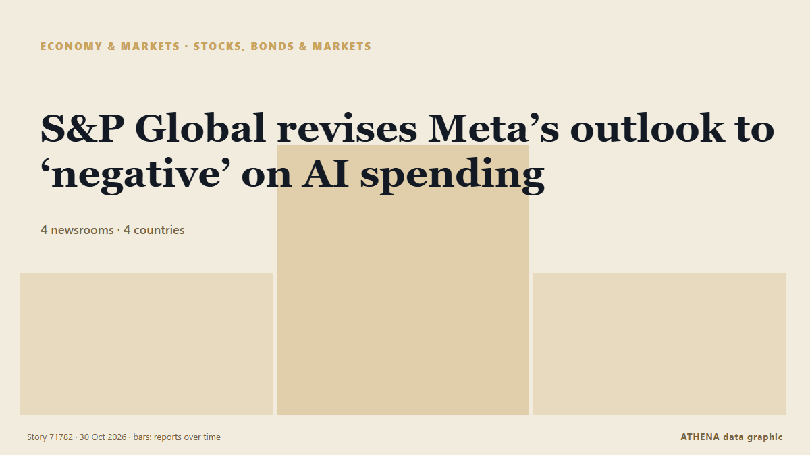

Acciones, bonos y mercados
| 18 oct | 0 |
|---|---|
| 19 oct | 0 |
| 20 oct | 1 |
| 21 oct | 2 |
| 22 oct | 1 |
| 23 oct | 1 |
| 24 oct | 0 |
| 25 oct | 0 |
| 26 oct | 3 |
| 27 oct | 4 |
| 28 oct | 5 |
| 29 oct | 2 |
| 30 oct | 5 |
| 31 oct | 0 |
Los titulares se muestran en inglés, tal como se publicaron.

S&P Global revises Meta’s outlook to ‘negative’ on AI spending
S&P Global Ratings on Friday revised its outlook on Meta Platforms (META.O), opens new tab to “negative” from “stable”, citing significant uncertainty around the social media giant’s capital spending… de FBC News
Congress approves supplementary credit to address El Niño and other urgent needs
The plenary of the Congress of the Republic approved the Executive branch’s legislative proposal to access supplementary credits. de Andina (English)
Jio’s blockbuster debut puts valuation, earnings in focus
India’s second-most valuable listed company now needs to show investors the money. de The Business Times
Microsoft Up, Google Down. A Tale of Two Hyperscalers.
Investors are showing little patience for lavish spending and meager returns on companies’ artificial intelligence bets. de New York Times Business
Sonia Gandhi makes Instagram debut, shares first look of upcoming memoir ‘Belonging: A Journey Of Love’
In her first post, Sonia Gandhi described the memoir as a story of “love, duty, loss and finding a place to belong” de Hindustan Times
Seoul stocks open lower on Wall Street losses, AI concerns
South Korean stocks opened lower Friday, tracking overnight losses on Wall Street, as renewed concerns over the sustainability of the artificial intelligence (AI) boom weighed on investor sentiment. de Korea Herald
Tech stocks slide as Alphabet’s record plunge revives AI fears
(Bloomberg) -- Tech stocks were dragged lower by a record drop in Alphabet Inc. after disappointing results renewed investor concerns about the threat that artificial intelligence poses to its core… de The National
‘They are trying to intimidate us’: Indonesia’s Prabowo remains defiant in the face of an MSCI double downgrade
MSCI's proposal to reclassify Indonesia as a "standalone" market triggered a stock rout and a presidential outburst. de Fortune
Dangote Refinery’s IPO closes with investors from 120 countries
"This is a historic achievement for Africa. de Vanguard
Election uncertainty rocks markets as Tel Aviv stocks tumble and shekel reverses gains
The TA-35 and TA-125 plunged as election uncertainty erased earlier optimism, while the shekel weakened and government bond yields climbed. de The Jerusalem Post
Investors Brace for Big Tech’s A.I. Spending Bill
Tech stocks have rebounded before pivotal earnings reports from artificial intelligence hyperscalers like Google and Microsoft. de New York Times Business
Mukesh Ambani gets teary-eyed as children talk about Reliance's journey at Jio listing
Dubai: Reliance Industries Chairman Mukesh Ambani was visibly emotional as his children, Isha Ambani and Anant Ambani, delivered heartfelt speeches at the Jio Platforms listing ceremony at the… de Gulf News
Ambani's Jio to make Mumbai trading debut after record $3.2 billion India IPO
Low-cost broadband provider Jio Platforms aims for £81bn valuation when it floats on the stock market on Wednesday India’s second-richest man, Mukesh Ambani, is launching what could be the country’s… de The Guardian
AI, semiconductors drive foreign investor gains, weakening Taiwan dollar
Taiwan's AI and semiconductor stocks have delivered substantial gains for foreign investors, who have recently taken profits, converted the proceeds into US dollars, and repatriated them, driving the… de DigiTimes Asia
Anthropic files for Nasdaq IPO as half-year revenue hits $16.3bn
Anthropic made its prospectus public on Monday. de The Next Web
Dollar steady ahead of Fed decision; focus on UK budget
Gold slipped on Tuesday, weighed down by a firmer US dollar, while investors looked ahead to the Federal Reserve’s policy meeting for fresh guidance on the outlook for interest rates. de Business Recorder
Commentary: Anthropic’s record US$2 trillion stock market listing highlights growing risks for us all
Holding AI risk in one's portfolio is becoming unavoidable for most investors, says an academic. de CNA (Channel NewsAsia)
Global markets enjoy tech rally amid renewed AI optimism but remain cautious
Anthropic files for IPO, Meta announces plans to finance $95B to support AI infrastructure, but investors remain cautiously optimistic as profitability concerns persist ahead of earnings reports by… de Anadolu Agency (English)
Meta strikes deal to keep Zuckerberg in California after wealth tax concerns
Meta Platforms has struck a deal with Mark Zuckerberg to keep him in California after the CEO warned he was considering leaving the state that houses the company's headquarters if voters pass a… de MyJoyOnline